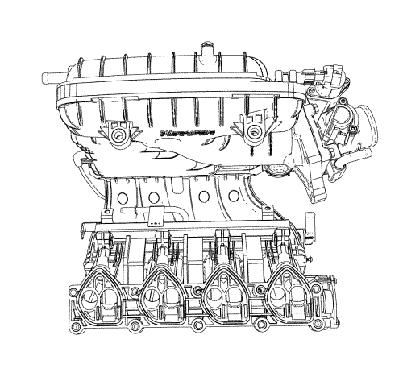

Descripción del sistema de control del actuador del acelerador (TAC)
El sistema de control del actuador del acelerador (TAC) se utiliza para mejorar las emisiones, el ahorro de combustible y la conducción. El sistema TAC elimina el enlace mecánico entre el pedal del acelerador y la válvula de mariposa del acelerador. El sistema TAC elimina la necesidad de un módulo de control de crucero y el motor de control de aire en ralentí. A continuación se incluye una lista de los componentes del sistema TAC:
| • | El conjunto del pedal del acelerador incluye los siguientes componentes: |
| - | El pedal del acelerador |
| - | El sensor 1 de posición del pedal del acelerador (APP) |
| • | El conjunto del cuerpo del acelerador incluye los siguientes componentes: |
| - | El sensor 1 de posición del acelerador |
| - | El sensor 2 de posición del acelerador |
| - | El motor del actuador del acelerador |
| - | La válvula de mariposa del acelerador |
| • | El módulo de control del motor (ECM) |
El ECM efectúa un seguimiento de la necesidad del conductor de aceleración con 2 sensores APP. El rango de tensión de la señal del sensor APP 1 se encuentra entre 0,5 y 4,5 V, a medida que el pedal del acelerador se desplaza desde la posición de reposo a la posición de recorrido completo del pedal. El rango del sensor APP 2 se encuentra entre 0,3 y 2,2 V, a medida que el pedal del acelerador se desplaza desde la posición de reposo a la posición de recorrido completo. El ECM procesa esta información junto con las otras entradas del sensor para solicitar que la válvula de mariposa del acelerador se sitúe en una determinada posición.
La válvula de mariposa del acelerador se controla con un motor de corriente directa llamado motor de control del actuador del acelerador. El ECM puede mover este motor hacia adelante o hacia atrás controlando la tensión de la batería y la masa con 2 excitadores internos. La válvula de mariposa del acelerador se mantiene en posición de reposo a 5,7 grados o en posición sin tensión mediante un muelle de retroceso de fuerza constante. El muelle mantiene la válvula de mariposa del acelerador en la posición de reposo cuando no se detecta un flujo de corriente desde el motor del actuador.
El ECM supervisa el ángulo de la válvula de mariposa del acelerador con 2 sensores de posición del acelerador. El rango de tensión de la señal del sensor 1 de posición de la mariposa se encuentra entre 0,95 y 4,35 V, a medida que la placa de mariposa es desplazada de la posición de ralentí a totalmente abierta (WOT). El intervalo de tensión de la señal del sensor 2 de posición del acelerador se sitúa entre 4,05 y 0,65 V a medida que el pedal del acelerador se mueve desde ralentí a la posición WOT.
El ECM realiza el diagnóstico que supervisa los niveles de tensión de los dos sensores APP, los dos sensores de posición del acelerador y el circuito del motor TAC. También supervisa la tasa de retroceso de los muelles de retroceso alojados en el interior del conjunto del cuerpo del acelerador. Estos diagnósticos se realizan en diferentes momentos dependiendo de si el motor está en marcha, parado, o si el ECM está realizando en ese momento un procedimiento de readquisición del cuerpo del acelerador.
Cada vez que el ciclo de encendido se desconecta, el ECM realiza una comprobación rápida del muelle de retroceso del acelerador para asegurarse de que la válvula de mariposa del acelerador puede volver a la posición de reposo del 7% desde la posición al 0%. Este procedimiento sirve para asegurar que la válvula de mariposa del acelerador puede volver a la posición de reposo en caso de avería en el circuito del motor del actuador. Si hace frío, tenga en cuenta que el ECM pone la válvula de mariposa del acelerador al 0% con el encendido conectado y el motor desactivado para eliminar el hielo que se pueda haber formado en la válvula de mariposa del acelerador.
Procedimiento de readquisición del cuerpo del acelerador
El módulo de control del motor (ECM) almacena valores que incluyen las posiciones más bajas posibles del sensor de posición del acelerador y las posiciones de reposo. Estos valores solo se borrarán o sobrescribirán si se reprograma el ECM o si se realiza un procedimiento de readquisición del cuerpo del acelerador. Tenga en cuenta que si se desconecta la batería, el ECM realizará inmediatamente un procedimiento de readquisición del cuerpo del acelerador cuando se active el encendido.
El ECM realiza un procedimiento de reprogramación dos veces y compara los resultados. Si los resultados son prácticamente similares, los valores se almacenan y finaliza el procedimiento de programación. Cuando el ECM lleva a cabo un procedimiento de programación, se produce lo siguiente:
| • | El encendido está en la posición ON. |
| • | El motor está arrancando. |
| • | El encendido se desactiva. |
El ECM realiza el procedimiento de programación cada 15 ciclos de encendido.
El ECM ordena que la válvula de mariposa del acelerador pase de posición de reposo a completamente cerrada y, a continuación, almacena las tensiones del sensor 1 y 2 de posición del acelerador. Este procedimiento ocupa menos de 1 seg. Si existe alguna avería en el sistema del control del impulsor del acelerador (TAC), se registrará un DTC.
Modos de potencia reducida/Acciones predeterminadas del sistema TAC
Hay 4 modos de potencia reducida que el módulo de control del motor (ECM) puede utilizar de manera predeterminada si se detecta un error en el sistema de control del actuador del acelerador (TAC). El ECM supervisa las siguientes condiciones:
| • | Fallo de circuito del sensor 1 ó 2 de posición del pedal del acelerador (APP) |
| • | Fallo de correlación del sensor APP |
| • | Una avería en el circuito de referencia de 5 V |
| • | El voltaje de la batería es inferior a 8 V o superior a 24 V. |
Si el ECM detecta cualquiera de las anteriores condiciones, el ECM entrará en un modo de potencia reducida de rendimiento limitado. En el modo de rendimiento limitado se limita el par motor. El ECM permanece en este modo de potencia reducida durante todo el ciclo de encendido, aunque se corrija la avería.
Si no existe información del sensor APP, el sistema entrará en un modo de potencia reducida de inactividad obligatoria. En el modo de inactividad obligatoria, el ECM utiliza una posición de sensor APP predeterminada que se calcula a partir del interruptor de freno, la posición de marcha del cambio y la velocidad del vehículo. El vehículo puede conducirse a hasta 32 km/h (22 MPH) en este modo engranando el cambio en la marcha y soltando el pedal de freno.
Si existe un problema con los circuitos TAC, un fallo en la posición real ordenada del actuador del acelerador o un fallo de circuito del sensor 1 ó 2 de posición del acelerador, el ECM entra en un modo de potencia reducida del motor gestionada por alimentación. En el modo de gestión de la alimentación, no se controla la válvula de mariposa del acelerador. El par motor se controla al valor deseado mediante el apagado del cilindro y el retardo del arranque. El motor se pondrá en ralentí o en crucero con 2 cilindros activados y acelerará con los 4 cilindros.
Si el ECM detecta un fallo grave en el sistema TAC, el ECM entrará en modo de desconexión forzada. En este modo, el ECM desactiva el sistema TAC, el sistema de combustible y el sistema de encendido para que el motor no se encienda. El modo de desconexión forzada se produce cuando el ECM detecta un problema interno grave del ECM, cuando la válvula de mariposa del acelerador está obstruida en posición abierta o cuando se detecta una fuga de vacío considerable en el colector de admisión.
Válvula de control de la guía de deslizamiento del colector de admisión de desactivación de puertos

La curva de par característica de un motor de aspiración normal depende principalmente de cómo cambia la presión media del motor sobre la gama de regímenes del motor. La presión media es proporcional al volumen de la masa de aire presente en el cilindro cuando se cierra la válvula de entrada. El diseño del sistema de entrada determina la cantidad de masa de aire que puede aspirarse en el cilindro a un determinado régimen del motor. A diferencia de la sincronización del colector de admisión de resonancia, que modifica la longitud de la guía de deslizamiento de admisión, el control de la guía de deslizamiento del colector de admisión de desactivación de puertos utiliza las válvulas de desactivación del puerto a fin de lograr el máximo rendimiento y eficiencia sobre el rango operativo completo del motor. Estas válvulas están situadas en el colector de admisión, montadas sobre cada uno de los puertos de admisión del cilindro.
El cierre de la válvula de desactivación de puertos está normalmente abierto. Cuando la velocidad y la carga del motor se sitúan por debajo de un umbral calibrado, el ECM proporciona una puesta a masa al solenoide de la válvula de desactivación de puertos, proporcionando energía a la misma y permitiendo aplicar un vacío al actuador de la válvula de desactivación de puertos desde el depósito de vacío. El actuador cierra entonces la válvula de desactivación de puertos para una velocidad de carga incrementada en el puerto de admisión y un remolino en la cámara de combustión, que aumenta el rendimiento térmico. A mayores velocidades y cargas del motor, la válvula de desactivación de puertos regresa a la posición abierta.
El sistema de sincronización del colector de admisión de desactivación de puertos consta de los siguientes elementos:
| • | El solenoide de la válvula de desactivación de puertos (PDA) |
| • | El actuador de la válvula de desactivación de puertos (PDA) |
| • | La válvula de desactivación de puertos (PDA) |
| • | Un colector de admisión |
La tensión de encendido se suministrada directamente a la válvula solenoide de desactivación de puertos. El módulo de control del motor (ECM) controla la válvula solenoide de desactivación de puertos poniendo a masa el circuito de control a través de un interruptor de controlador interno. La principal función del controlador es proporcionar masa a la válvula solenoide de desactivación de puertos. El ECM puede determinar si el circuito de control está abierto, en cortocircuito a masa o en cortocircuito a tensión efectuando un seguimiento de la tensión del circuito de control.
| © Copyright Chevrolet Europe. Reservados todos los derechos |